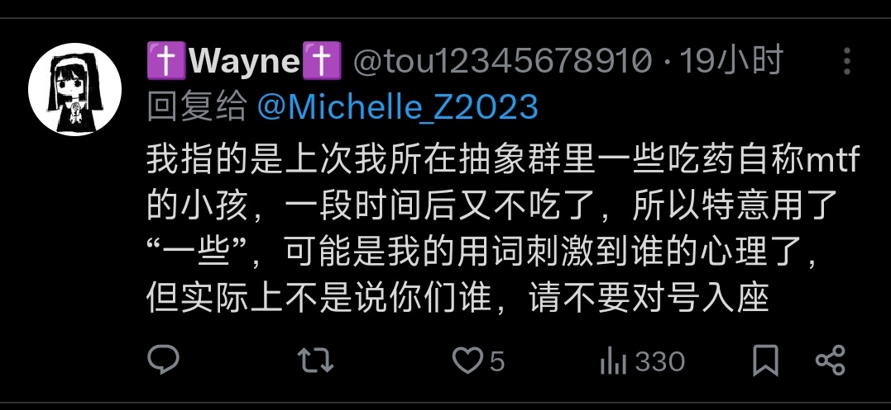

穗_我爱你🏳️⚧️💛🤍💜🖤
@Sui_aini
所以吃不吃药和性别认同，有什么关系呢?你有什么资格去评判别人呢，能管好自己吗

穗_我爱你🏳️⚧️💛🤍💜🖤
@Sui_aini
你是死人吧，hrt和性别认同有你吗比的关系呢，我从17岁的时候就觉醒了性别意识，当时的我特别的无助，我感觉自己就是异类，我想去了解我自己，但在当时的情况下，我找不到和我一样的人，我想去吃雌激素药，可我也没有途径去买，我看到家里有黄体酮，我吃了很久的黄体酮，直到我的身体出现了问题（1 https://t.co/hnztWXhi1F